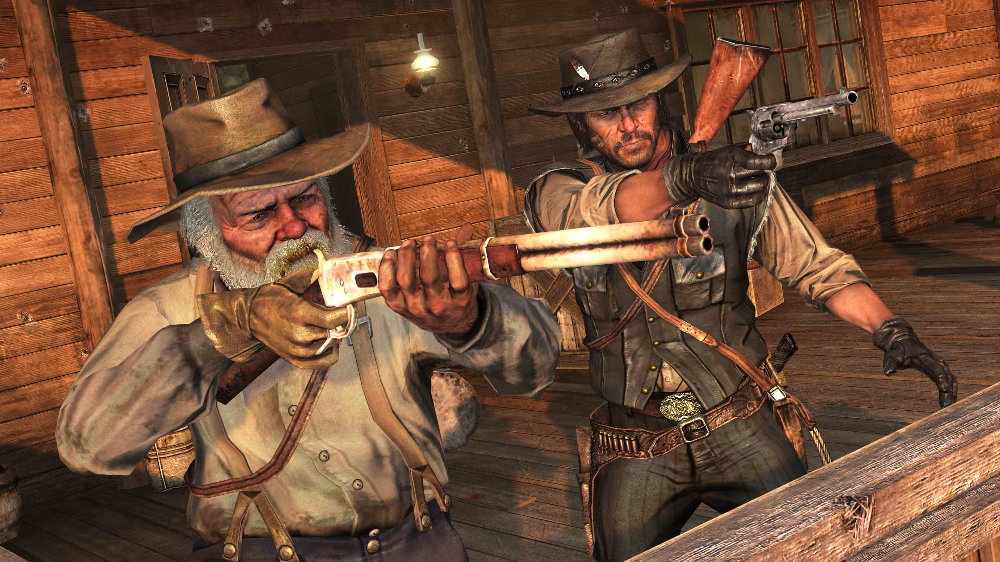
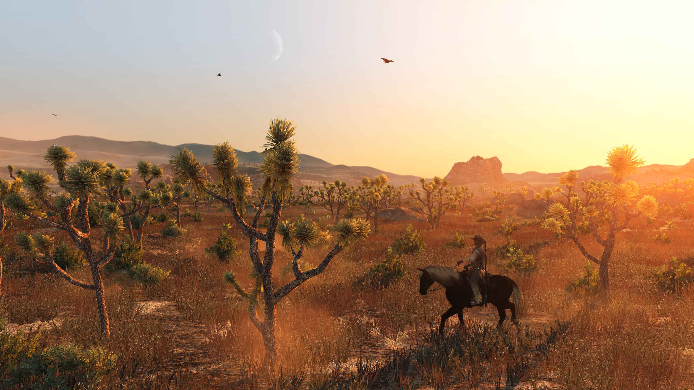
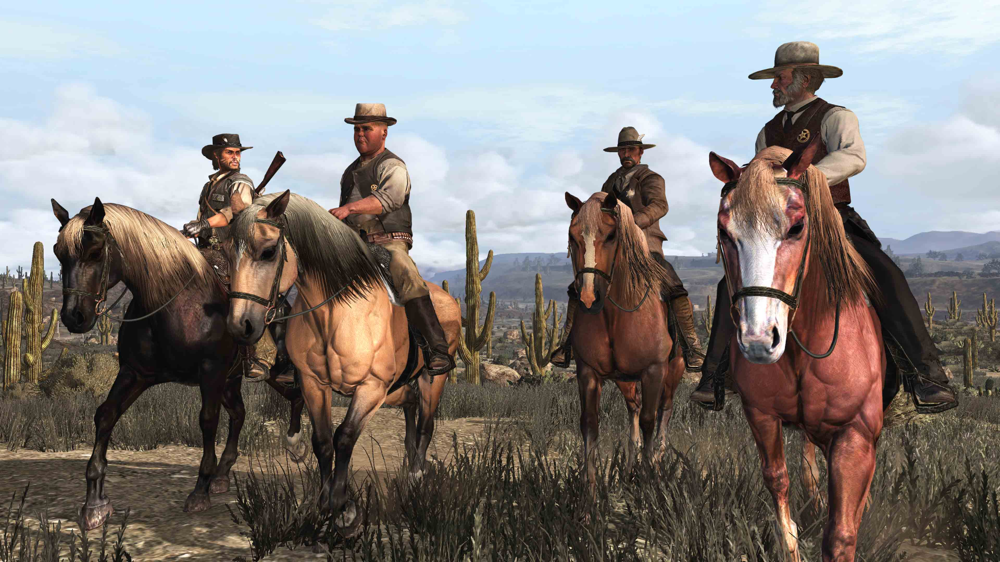
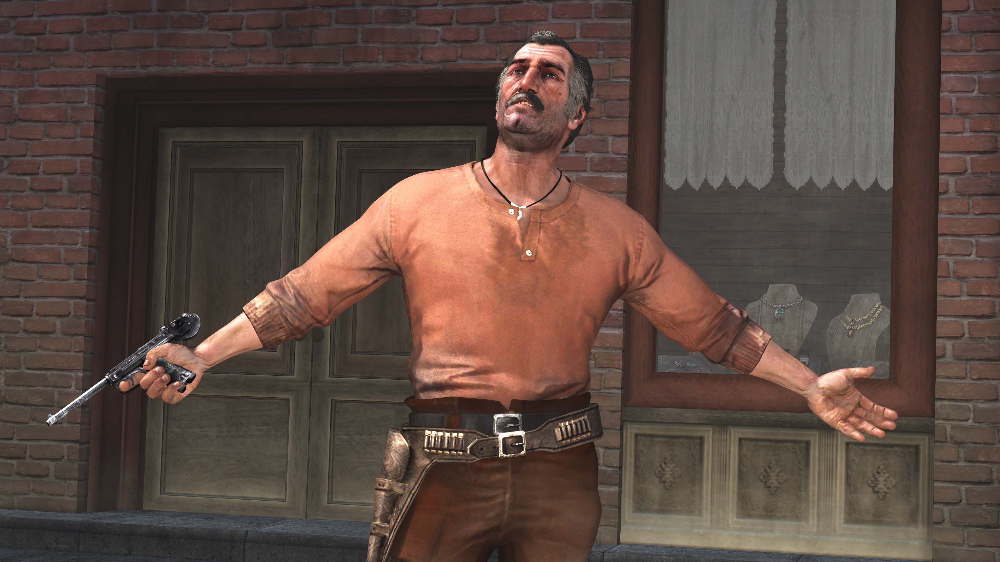
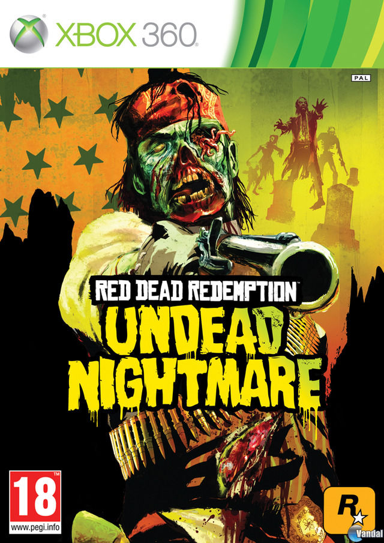

Red Dead Redemption

Descripción
Red Dead Redemption nos lleva al Salvaje Oeste a principios del siglo XX, una época en la que el viejo mundo de los forajidos está llegando a su fin. En esta aventura nos ponemos en la piel de John Marston, un antiguo miembro de una banda criminal que se ve obligado por agentes federales a perseguir a sus antiguos compañeros para conseguir que su familia pueda vivir en libertad.
A lo largo de la historia recorreremos un enorme mundo abierto inspirado en el Oeste americano, lleno de pueblos, paisajes naturales y personajes con sus propias historias. Durante nuestro viaje tendremos que completar misiones, enfrentarnos a peligrosos criminales y descubrir cómo está cambiando una sociedad que poco a poco deja atrás la época de los vaqueros y los forajidos.
En cuanto a la jugabilidad, combina los tiroteos en tercera persona con una gran libertad de exploración. Podremos participar en duelos, cazar animales, jugar a las cartas y a los dados, atrapar forajidos e incluso encontrarnos con situaciones inesperadas mientras recorremos el mapa. Además, cuenta con un sistema de honor y fama que influye en cómo reaccionan los demás personajes ante nuestras acciones.
Todo ello acompañado de una historia muy emocionante, personajes memorables y una ambientación espectacular que consigue transportarnos directamente al Salvaje Oeste.
Capturas del videojuego




Información del videojuego
| Desarrollador | Plataforma | Fecha de lanzamiento |
|---|---|---|
| Rockstar San Diego | PS3, PS4, Xbox 360, Nintendo Switch, PC, Android e iOS | 18 de mayo de 2010 |
Expansión
A ver, la verdad es que sin más esta expansión es una historia de zombies independiente.

Undead Nightmare (2010)
Undead Nightmare es una expansión independiente de Red Dead Redemption que nos sumerge en un mundo post-apocalíptico lleno de zombis. La historia nos sitúa en el mismo universo del juego original, pero con un giro sobrenatural: un misterioso virus ha convertido a la mayoría de la población en muertos vivientes.
En esta expansión, los jugadores asumen nuevamente el papel de John Marston, quien debe enfrentarse a hordas de zombis mientras busca una cura para la plaga que ha devastado el Oeste. La narrativa combina elementos de terror y acción, ofreciendo una experiencia única dentro del universo de Red Dead Redemption.
Además de la historia principal, Undead Nightmare introduce nuevas misiones, armas y enemigos, así como un modo multijugador que permite a los jugadores enfrentarse entre sí o cooperar para sobrevivir a las oleadas de zombis. La expansión también incluye nuevos desafíos y logros que amplían la rejugabilidad del título.
En resumen, Undead Nightmare ofrece una experiencia fresca y emocionante para los fans de Red Dead Redemption, combinando la atmósfera del Salvaje Oeste con el terror y la acción de un apocalipsis zombi.
Opinión personal
UFFFFFF, AHORA SÍ QUE SÍ VIENE LO BUENO... Red Dead Redemption, mi gran amor dentro de la maravillosa industria que es Rockstar Games. GRACIAS, Rockstar, por crear esta auténtica obra de arte.
Bueno, ¿qué puedo decir sobre este juego? Para empezar, no es la primera vez que oímos hablar de Red Dead. Ya teníamos Red Dead Revolver, que estaba más centrado en la acción y los tiroteos, pero con esta entrega Rockstar llevó la franquicia a otro nivel.
Lo primero que quiero destacar es su historia. Nos ponemos en la piel de John Marston, un antiguo miembro de la banda de Dutch van der Linde, que acabó separándose tras una serie de acontecimientos que no voy a desvelar ahora porque serían spoilers. Nuestro objetivo es recuperar a nuestra esposa, Abigail, y a nuestro hijo, Jack, que están retenidos por unos agentes federales. Para conseguirlo, nos obligarán a perseguir y capturar a antiguos miembros de la banda que alguna vez consideramos nuestros amigos.
Red Dead Redemption cuenta con un montón de personajes memorables, como Javier Escuella, Bill Williamson o el mismísimo Dutch van der Linde, antiguo líder de la banda y una figura clave en los acontecimientos que provocaron su separación. De hecho, conoceremos mucho más sobre él y sobre el resto de la banda en la precuela, de la que ya hablaremos más adelante.
Pero es que, como videojuego, Red Dead Redemption es una auténtica joya. Su ambientación es espectacular: podemos recorrer diferentes regiones del suroeste estadounidense y hasta cruzar la frontera para explorar México. Todo está lleno de detalles que consiguen transmitir perfectamente esa sensación de estar viviendo los últimos años del Salvaje Oeste.
Otro aspecto que me encanta es la fauna. Contamos con una gran variedad de animales salvajes que podemos encontrar por el mapa, cazar e incluso utilizar para conseguir recursos. Además, tenemos un sistema de honor y fama que influye en cómo reaccionan los personajes ante nuestras acciones. Vamos, que nuestras decisiones tienen consecuencias.
Y, por supuesto, no podemos olvidarnos de todas las actividades que ofrece el juego: podemos jugar al póker (qué vicio), participar en duelos, cazar recompensas, buscar tesoros y muchas cosas más. Es de esos juegos en los que puedes salir a hacer una misión y acabar pasando una hora haciendo cualquier otra cosa.
En definitiva, para mí Red Dead Redemption es una auténtica obra de arte. Una historia inolvidable, unos personajes increíbles y una ambientación que te atrapa desde el primer momento. Rockstar consiguió crear un mundo al que da gusto volver y, sinceramente, se nota el cariño que pusieron en este proyecto. Y eso que todavía nos queda hablar de su precuela, que ya os adelanto que tampoco se queda corta.